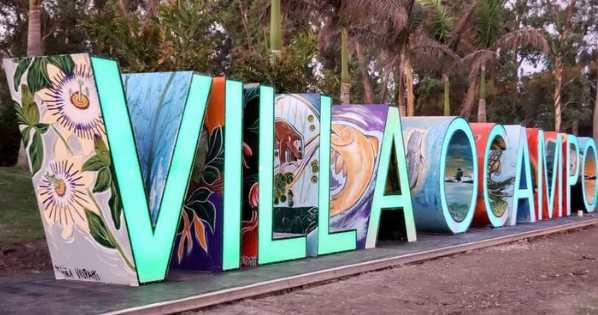
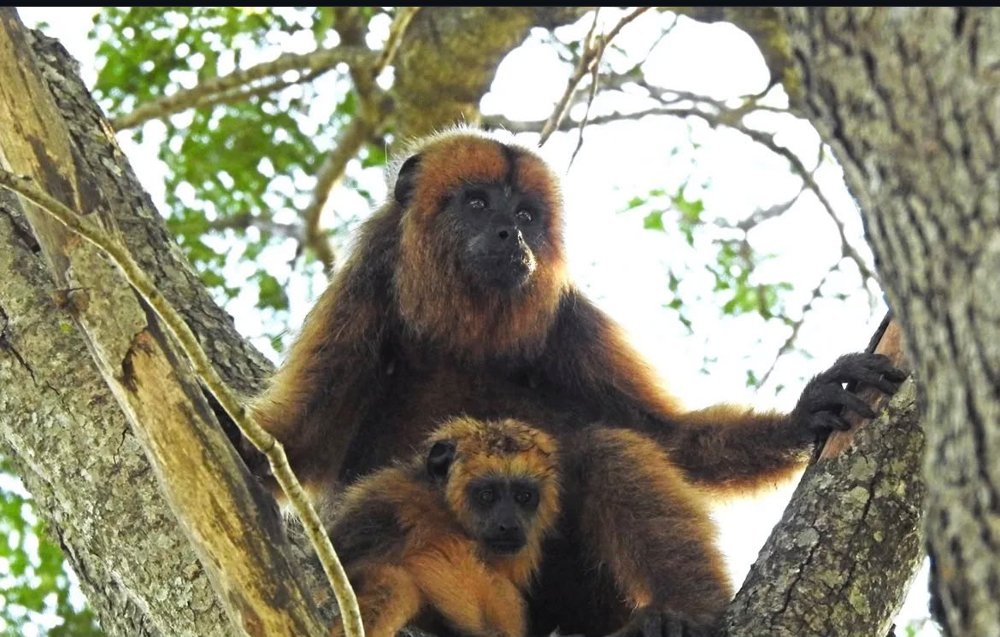
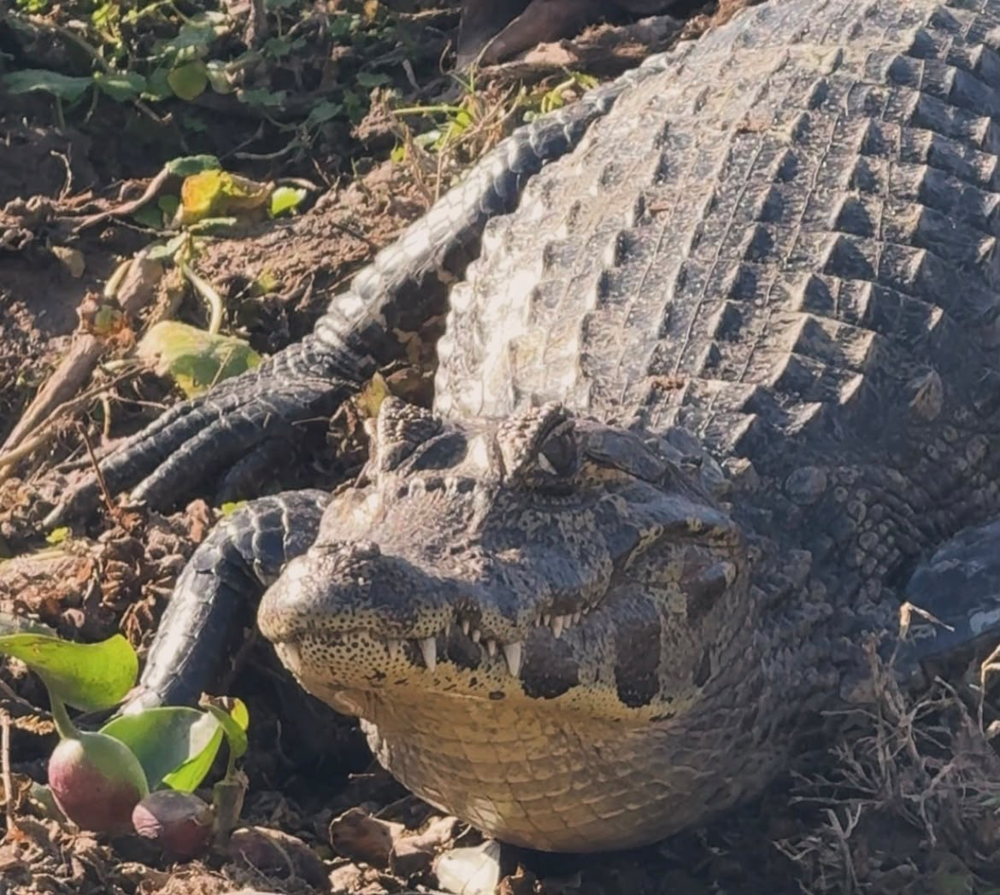

Mi ciudad natal

Villa Ocampo se encuentra al norte de la provincia de Santa Fe. Es una ciudad rodeada de naturaleza, historia y cultura. Además, es una de las principales puertas de ingreso al Sitio Ramsar Jaaukanigás, uno de los humedales más importantes de Argentina.
Villa Ocampo fue fundada el 30 de noviembre de 1878 por Manuel Ocampo Samanés. Los primeros colonos llegaron en 1879, principalmente desde Suiza y Francia. Con el paso de los años la ciudad fue creciendo gracias a la agricultura, la ganadería y la industria azucarera. Hoy es una ciudad reconocida por su producción y por sus paisajes naturales.
Villa Ocampo, conocida como "La Dulce y Cordial", se destaca por la calidez, la hospitalidad y la amabilidad de su gente.
Jaaukanigás significa "Gente del Agua". Es un gran humedal donde viven cientos de especies de animales y plantas. Es uno de los principales atractivos turísticos de Villa Ocampo y un lugar ideal para disfrutar de la naturaleza.


Si querés conocer más sobre Villa Ocampo y el Jaaukanigás podés visitar el siguiente sitio oficial.
Turismo Villa Ocampo